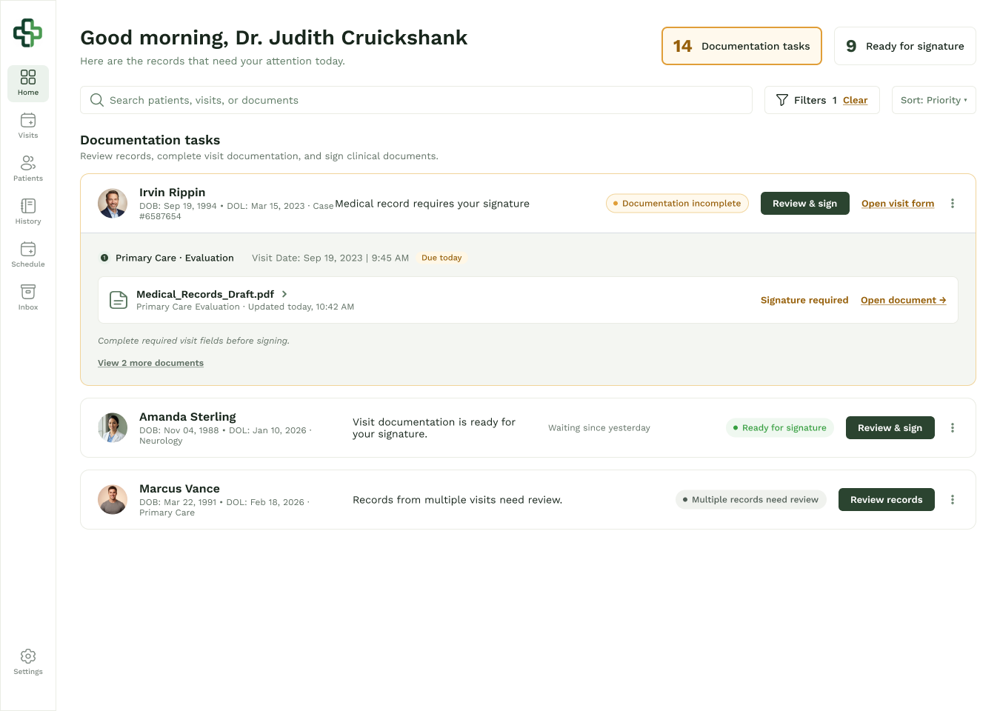
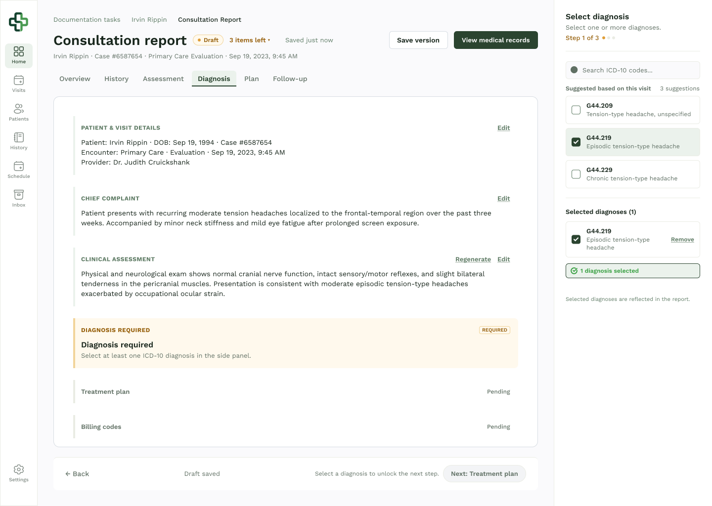
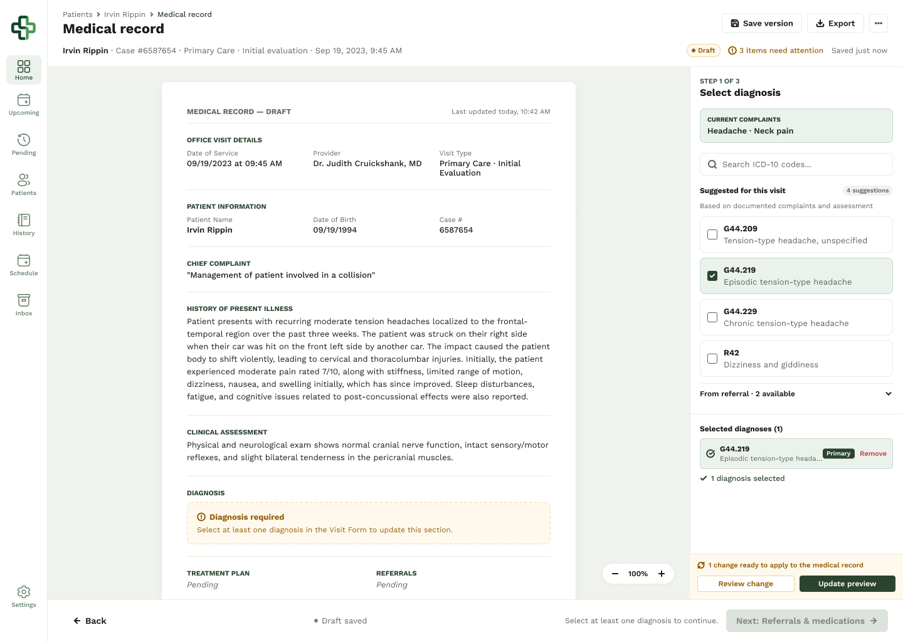

A multi-role healthcare platform connecting patients, doctors, and attorneys through one coordinated workflow — built to help people navigating car-accident injury claims move fast between medical care and legal support.
HealthConnect is a multi-role healthcare SaaS platform that connects patients, doctors, and attorneys through one coordinated case — built around a specific, high-stakes moment: someone injured in a car accident who needs to reach a doctor and a lawyer fast, without the process falling apart between the two.
I owned the end-to-end product design across web and mobile — patient onboarding, appointment scheduling, secure video consultations, CRM-style patient-data management for the care team, and the design system underneath all four surfaces. The core responsibility wasn't styling screens; it was structuring one connected ecosystem so a single case stayed legible to four very different audiences at once.
Four roles needed to work off the same case without seeing the same interface:
The design challenge was building connected but role-specific workflows for a high-trust, data-heavy environment — where getting the information architecture wrong doesn't just look messy, it puts someone's care or case at risk.
I designed the platform as one connected ecosystem rather than four separate apps — patient-facing journeys, doctor workflows, attorney access, and internal CRM operations all had to stay consistent with each other, not just internally polished.
Exported directly from the production Figma file, unedited — the logo shown is a placeholder mark from the design file, not the client's real branding.
A triaged task queue — signature-ready records, incomplete documentation, and multi-visit reviews — surfaces what needs the doctor's attention first, ahead of a flat patient list.
A structured, step-by-step report — chief complaint and clinical assessment feed a suggested ICD-10 diagnosis list, and the record can't move to a treatment plan until one is selected.
The full draft record next to the same diagnosis panel, with current complaints pulled forward and codes already suggested from referral — so signing off is a review, not a re-entry.



Shipped role-based interfaces spanning patient onboarding, appointment scheduling, video consultations, structured clinical documentation, and CRM operations — across web and supporting mobile flows — over a ~10-month engagement with a full cross-functional product team.
Designing four roles into one connected system taught me that consistency isn't about making every screen look the same — it's about keeping the same underlying case legible from four completely different vantage points, without ever showing someone more than their role needs to see.